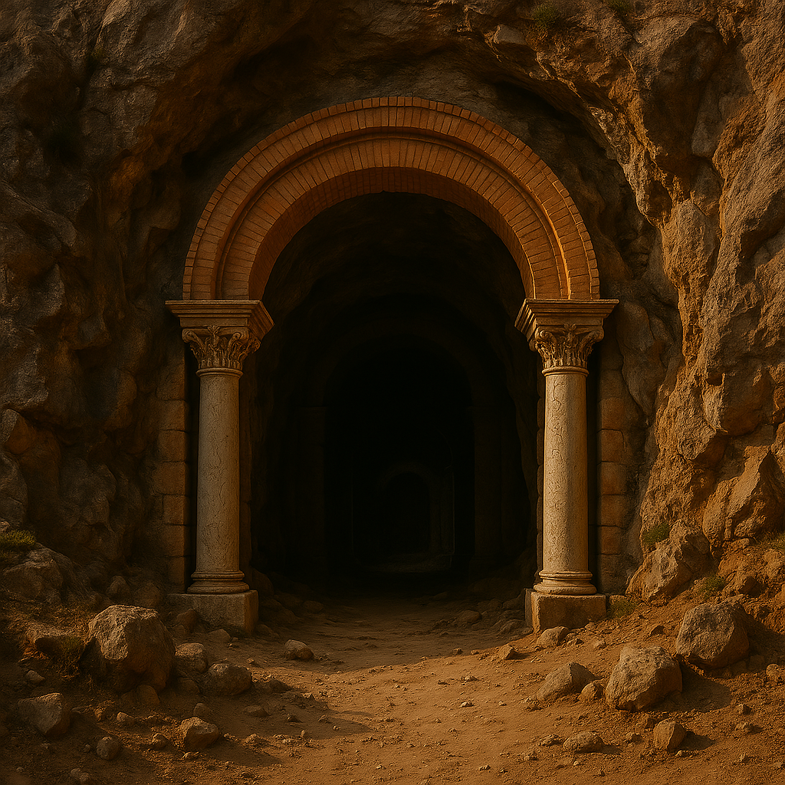

O Eco da Guerra e a fuga de Rahin
Rahin, um jovem soldado árabe do Império Sassânida, se encontra em uma guerra entre seu Império e o Império Persa. Durante uma patrulha, ele e seu grupo são emboscados. Separado de seus companheiros, ele foge para o deserto.
A Esperança
Perdido no deserto, Rahin encontra um papiro romano desgastado pelo tempo. Ao perceber que contém um código misterioso com números e símbolos romanos, ele sente uma intensa curiosidade de decifrá-lo.

Em busca de abrigo
Rahin encontra um antigo templo romano perdido em meio ao deserto e decide se abrigar nele para passar a noite em segurança.